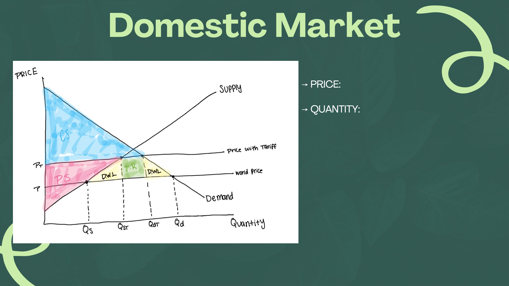
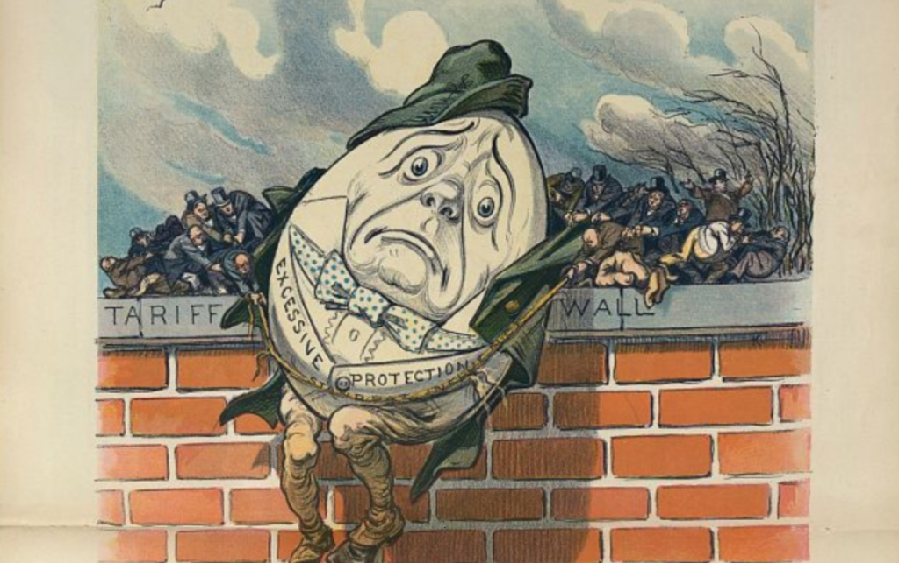

Smoot-Hawley: DID PROTECTIONISM PROTECT AMERICAN FARMERS?
Background
-
Signed into law in June 1930 (Hoover)
- Farmers faced failing crop prices 1920s
- increased competition with European markets
-
Intended to protect American farmers and indutries from foriegn competition
-
Raised tariffs on a wide range of imported goods (textiles, agriculture, metals, household goods, etc.
THESIS
THE SMOOT-HAWLEY ACT FAILED TO PROVIDE PROTECTION TO FARMERS AS IT LED TO RETALIATORY TARIFFS AND REDUCED EXPORTERS’ ACCESS TO FOREIGN MARKETS, ULTIMATELY FAILING LONG-TERM IN OFFSETTING THE RECENT STOCKMARKET 1929 CRASH AND BOLSTERING DOMESTIC EMPLOYMENT AND MANUFACTURING.
Navigate to Slide 2 to inspect the domestic market supply & demand welfare model.
Domestic Market
Economic Shifts & Welfare Effects
PRICE:
Domestic Price increases from World Price (PW) up to Tariff Price (PT).
Imported goods are artificially inflated, raising living costs for domestic consumers and prices of imported agricultural inputs.
QUANTITY:
- Domestic Supply: Expands from Qs to Qst as domestic producers capture market share.
- Domestic Demand: Contracts from Qd down to Qdt due to the law of demand at higher prices.
- Total Imports: Drastically shrink from (Qd − Qs) down to (Qdt − Qst).
- Net Deadweight Loss (DWL): Two triangular losses emerge — overproduction by higher-cost domestic suppliers (production inefficiency) and lost consumer utility (underconsumption).
Team Canva Slide 4: Original Hand-Drawn AP Micro Diagram
This high-resolution PNG is the original graphic created for our presentation, featuring our hand-drawn Supply & Demand curves, World Price (P), Tariff Price (PT), Consumer Surplus (CS), Producer Surplus (PS), Tariff Revenue (T.R.), and Deadweight Loss (DWL).

THE EXPORTING COUNTRY
Following Herbert Hoover’s passing of the Smoot-Hawley Tarrif Act, raising tariffs on over 20,000 imported goods in the ultimately unsuccesful effort to shield American industries from ecnomic collapse, nations across the world would retaliate by putting tarrifs on United States’ exports in what would be the Tarrif War of the 1930s.
Nations across the world, ranging in products based on localized industries that the United States demaned so greatly, would impleement heavy tarrifs as a means of retalations to Hoovers’s tarif. From Switzerland’s iconic Swiss watches and luxurious silk textiles, to Cuba’s staple sugar and Havana cigars that were so popular at the time
Switzerland
Retaliatory Action & BoycottWhen US tariffs made Swiss watches and fine silk imports unaffordable in America, Swiss industry halted imports of American cars and agricultural machinery, triggering immediate export losses for American manufacturing.
Cuba
Agricultural RetaliationHigh US import duties on Cuban sugar devastated the island's single-commodity export economy, sparking economic turmoil in the Caribbean and shutting US manufactured exports out of Latin American harbors.
Instead of protecting domestic sales, US exports were crushed globally as trading partners shut their borders in retaliation.
DID IT WORK?
A tariff is a tax used on imported goods to protect the domestic industry. The Hawley Smoot Tariff increased the tax of foreign goods by an additional 20% leading to a retaliatory tariff by foreign nations which collapsed the credit system of both foreign and domestic banks due to the inability to trade with the United States.
Specifically in the agricultural industry the price of cotton and other wares were so cheap due to low demand, leading to huge surpluses that farmers weren’t able to sell in the international market. This increase in surplus and inability to sell caused farmers to default on their mortgage loan, causing a domino effect that toppled American banks; further contributing to the great depression.
Primary Source: "Excessive Protection" on the Tariff Wall
Source: American-German Institute / Library of Congress (Udo J. Keppler & Schwarzmann, Puck Magazine)
Interactive Cartoon Inspector
Click any numbered pin on the lithograph to reveal the economic symbolism, congressional logrolling, and how it proves why the tariff failed.
Symbol Title
Description text...
Connection text...
Quality of Life & Trade Over Time
Longitudinal US Trade Volume (1928–1940)
Click points along the timeline to inspect import collapse and post-1934 RTAA recoveryFarm Parity Ratio Index
In 1929, the agricultural parity ratio was 92; by 1932, it plunged to 58. Because industrial tariffs kept manufactured goods expensive while agricultural export markets vanished, farmers had to sell more than double the bushels of wheat to buy basic necessities.
Farm Foreclosure & Bank Failure Rate
By 1932, over 38% of all farm mortgages in the US were delinquent. Rural banks holding agricultural paper could not collect debts, directly triggering the failure of over 9,000 American banks and wiping out the savings of ordinary depositors.
Consumer Price Index (CPI) Deadweight Loss
Smoot-Hawley taxed over 20,000 consumer staples (sugar, wool, leather shoes, tools). While nominal wages dropped by 42%, the cost of everyday living remained artificially propped up, transferring wealth from impoverished families to protected monopolists.
The solution
Frankln D. Roosevelt’s (FDR) new deal policy.
FDR’s New deal program had 3 goals:
The issue was the tariff and the solution was FDR’s reciprocal trade agreement act.
How it worked:
The RTAA solidified reciprocal trade between America and other couuntries. (prodominantley latin american countries.) Republicans would vote for high tarrifs and Democrats would vote for lower tarrifs. This allowed for the tarrifs to be reliant on U.S. domestic politics.
Instead of being controlled by congress kenedy was able to make Tarrifs something that was agreed on by the nation as a whole and by the executive branch. These new tarrifs were negotiable and were ensured to be feasible for other nations.
Office of The Historian Record
“Between 1934 and 1939, the Roosevelt Administration concluded trade agreements with 19 countries under the Reciprocal Trade Agreements Act: Belgium, Brazil, Canada, Colombia, Costa Rica, Cuba, Czechoslovakia, Ecuador, El Salvador, Finland, France, Guatemala, Haiti, Honduras, the Netherlands, Nicaragua, Sweden, Switzerland, and the United Kingdom. After 1945, the tariff negotiating procedure established under the RTAA program provided the model for that of the General Agreement on Tariffs and Trade (GATT), the agreement signed by 23 countries in 1947 that has provided the framework for multilateral trade liberalization in the post-WWII era.”
-Office of The Historian. “Milestones: 1921–1936 - Office of the Historian.” History.State.Gov, https://history.state.gov/milestones/1921-1936/export-import-bank. Accessed 16 Oct. 2026.
Key Presentation Takeaway
Protectionism isolated domestic agriculture, toppled the banking credit system, and prolonged economic devastation. Sustainable recovery required reciprocal bilateral negotiations and international trade liberalization under the RTAA and GATT.